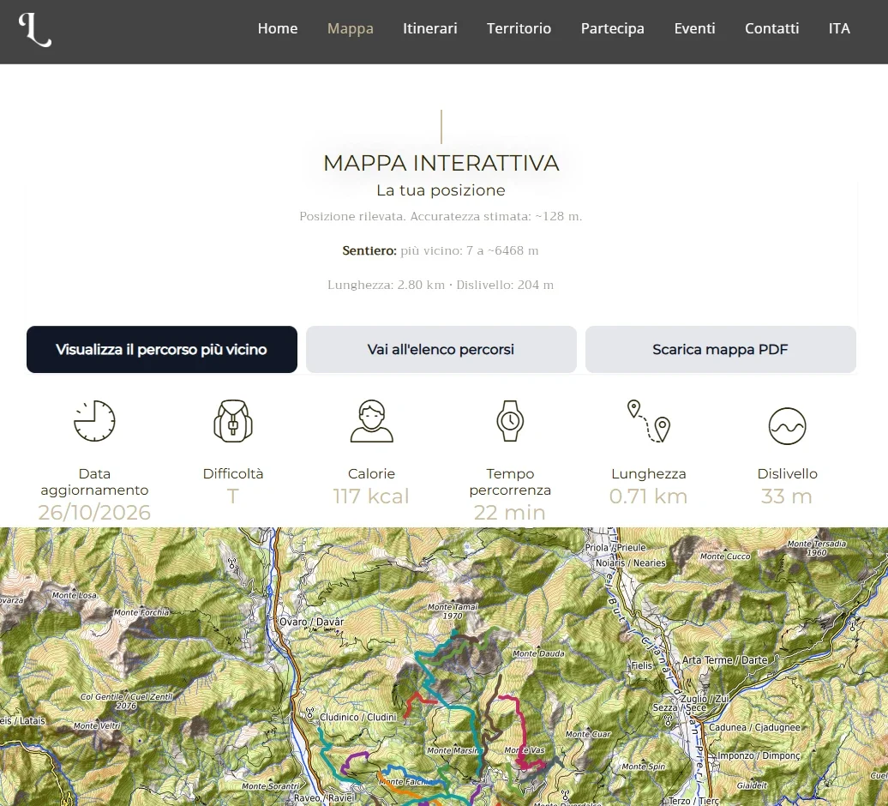

Pannello di gestione
Testi, pagine, gallerie, eventi e contenuti modificabili con anteprima.
Siti web · Piattaforme · Pannello di gestione
Siti veloci e curati con un pannello per aggiornare testi, pagine e contenuti senza toccare il codice. E collegati ai tuoi sistemi: prenotazioni, gestionale, notifiche.
Il problema
Cosa ottieni
Testi, pagine, gallerie, eventi e contenuti modificabili con anteprima.
Contenuti in più lingue, con traduzioni assistite da rivedere prima di pubblicare.
Messaggi raccolti nel pannello e notifiche sul telefono a ogni richiesta.
Iscrizioni, invii e casella email gestiti dallo stesso pannello.
Prenotazione dal sito, aree clienti, dati dal gestionale.
Sicurezza, backup, aggiornamenti e possibilità di tornare alla versione precedente.
Un esempio reale

Metodo
Prezzi indicativi
Prezzi di partenza indicativi. Il preventivo è a prezzo fisso, dopo aver verificato cosa serve davvero.
Esempi reali
Sito in italiano, inglese, tedesco e sloveno con percorsi, eventi e luoghi. Pannello con ruoli, posta integrata, notifiche, newsletter e statistiche dei QR code.
Visita ↗Disponibilità e prenotazioni del gestionale direttamente nel sito della struttura.
Visita ↗Domande frequenti
Sì. Testi, immagini e contenuti si cambiano dal pannello, con anteprima prima di pubblicare.
Struttura delle pagine, velocità, testi e dati per i motori di ricerca sono pensati fin dall'inizio per essere trovati da chi cerca.
Sì, con un canone mensile che copre hosting, sicurezza, backup e aggiornamenti.
Sì: prenotazioni, aree clienti e dati possono arrivare direttamente dal gestionale.
Contatto
Raccontaci a chi si rivolge, cosa deve fare e chi lo aggiornerà: entro 24 ore ti proponiamo struttura e preventivo.